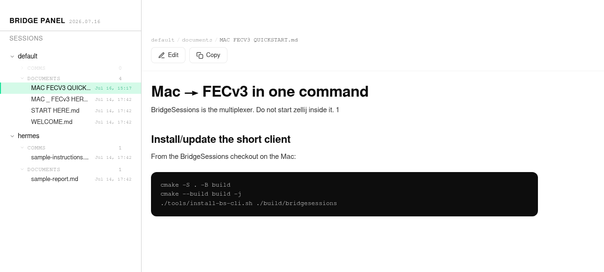
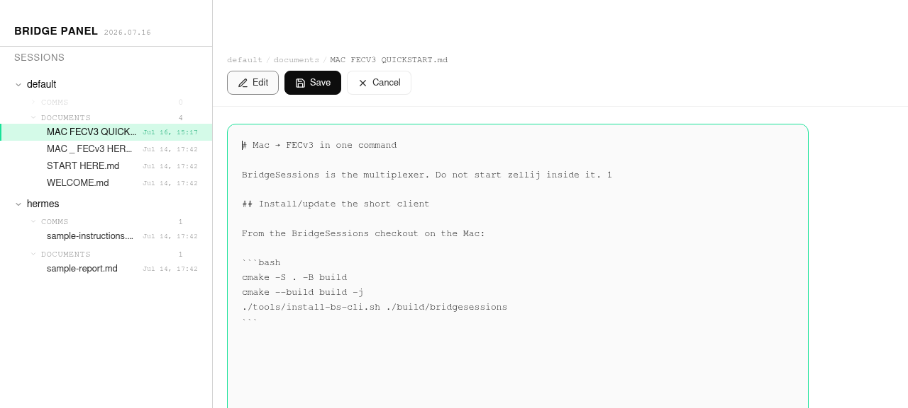

Why BridgeSessions¶
BridgeSessions is a secure mesh terminal system that replaces the usual
stack of remote-work tools with one binary, one protocol (bs://), and one
session model. It is built for humans and AI agents: long-lived shells,
file transfer for image/video artifacts, Windows automation, and a
document surface (Bridge Panel) for reviewing Markdown with your agent.
One mesh. Persistent PTYs. Mutual TLS. AI-friendly media and files.
The old stack (and what each piece did)¶
Before BridgeSessions, a serious remote workflow usually meant bolting several tools together:
| Tool | What it was good at | Pain it left behind |
|---|---|---|
| SSH | Encrypted remote shell, port forwards, keys | Drop a connection → lose the shell. No native session multiplexer. Latency feels “chatty” over WAN. |
| MOSH | Predictive local echo + UDP roaming when Wi‑Fi blips | Still a shell transport only; no file protocol, no multi-session server, limited ecosystem. |
| SCP / SFTP | Copy files over the SSH channel | Separate mental model and ACL story from your interactive session. |
| tmux / Zellij | Keep shells alive when you disconnect | Lives on the remote host; you still need SSH/MOSH just to reach it. Nested multiplexers with agents are painful. |
| WinRM / RDP | Windows remote automation and desktops | Different stack than Linux SSH; hard to unify in one agent workflow. |
BridgeSessions absorbs the job of each into a single design:
[ laptop / agent ] ── bs:// over TLS 1.2+ (prefer 1.3) ──► [ peer mesh ]
│
┌───────────────┼────────────────┐
▼ ▼ ▼
live shell file + image Bridge Panel
(PTY kept) + video path (Markdown surface)
Feature mapping: what you get instead¶
1. SSH → encrypted remote shell, without the “session death” tax¶
SSH gives you a secure pipe into a remote machine. When the pipe dies, the remote process usually dies with it (unless you stacked tmux underneath).
BridgeSessions keeps the PTY on the server. Clients attach and detach. Network blips reconnect with backoff; your agent or human reattaches to the same named session. Identity is ed25519 mutual TLS (TOFU / authorized keys), not a bag of OpenSSH server configs per host.
bridgesessions shell <peer> --name hms
# later, from another client:
bridgesessions shell <peer> --name hms # same session, same scrollback
2. MOSH → roaming-friendly, low-latency feel¶
MOSH predicted keystrokes and survived IP changes over UDP.
BridgeSessions is TLS/TCP for v1 (firewall-friendly, one port), with:
TCP_NODELAYfor keystroke latency- keepalive Ping/Pong
- automatic reconnect + reattach
- (roadmap) QUIC transport without changing the app protocol
You keep the “session survives the network” experience, without a second protocol stack beside SSH.
3. SCP → first-class file transfer on the same mesh¶
SCP was “another command over SSH.”
BridgeSessions speaks file transfer on bs:// (meta / chunk / ack /
request messages), so the same authenticated peer that runs your shell can
push or pull artifacts:
- configs, logs, build outputs
- screenshots and videos for an agent
- documents destined for Bridge Panel
No separate credential ceremony for “now copy a file.”
4. tmux / Zellij → the multiplexer is the server¶
tmux/Zellij solved persistence by multiplexing inside the remote host. That means:
- you still need a transport to reach them
- agents often end up nested: SSH → tmux → agent TUI
BridgeSessions is the multiplexer:
- named sessions with auto-spawn commands
- scrollback buffer (zstd compressed) replayed on reattach
- detach never kills the PTY
- multi-client identity namespaces (sessions keyed by client pubkey)
You do not start Zellij inside BridgeSessions for basic persistence — the mesh session is that layer.
5. WinRM / Windows desktop automation → one mesh that includes Windows¶
WinRM is the classic Windows remote-exec channel; RDP is the interactive desktop. Agents that need CUA (computer-use / UI automation) on Windows historically lived on a different planet from Linux SSH workflows.
BridgeSessions peers include Windows nodes in the same mesh:
- shell / exec paths for Windows peers
- file transfer for screenshots and recordings
- gameplay / desktop capture patterns for vision agents
- one identity and config model across Linux, macOS, and Windows
An agent can drive a Windows desktop (CUA), capture a screenshot or video, ship it across the mesh, and analyze it on a Linux peer — without re-plumbing SSH + WinRM + SMB for each hop.
Secure mesh (not a pile of one-off tunnels)¶
| Property | BridgeSessions |
|---|---|
| Transport | TLS 1.2+ (prefer 1.3) over TCP (port 19949 by default) |
| Auth | ed25519 mutual TLS + authorized_keys |
| Forward secrecy | X25519 |
| Compression | zstd per-frame on large payloads |
| Topology | multi-peer mesh with seed peers |
| Session security | sessions namespaced by client public key |
No CA bureaucracy for a personal/fleet mesh. Pin keys, authorize peers, ship.
AI-friendly by design¶
Agents are not “just another human typing.” They need durable sessions, structured artifacts, and media:
Persistent agent shells¶
An agent TUI (hermes --tui, coding agents, long jobs) lives in a named
session. If the agent process or network restarts, reattach — do not restart
the world.
Media through file transfer¶
Image message IDs are reserved, but 2.0.6-alpha2 does not implement large-image fragmentation or receiver rendering. Send PNG/JPEG/GIF/video artifacts through the bounded file-transfer protocol, then render or analyze them locally.
Screenshots & video for vision analysis¶
Typical AI loop:
- Windows peer captures a screenshot or MP4 (desktop / game / UI).
- File transfer carries the artifact across the mesh.
- Linux/macOS agent loads the artifact and runs vision analysis.
- Agent writes findings as Markdown into Bridge Panel for human review.
Files as first-class agent I/O¶
Logs, patches, datasets, and recordings move as mesh file transfers — not as base64 pasted into chat.
Bridge Panel — long-form communication with your agent¶
Chat UIs are bad at long specs, multi-file reviews, and iterative Markdown. Bridge Panel is a small web surface on the mesh:
- Session tree:
session → type → file - Breadcrumb + outlined tools: Edit / Save / Cancel / Copy
- Rendered Markdown for reading; raw source for copy/edit
- Publish from CLI:
bridgesessions pane publish note.md
Humans review agent output as documents. Agents treat the panel as a shared notebook, not a scrolling chat.
Bridge Panel — read view¶

Sidebar sessions, breadcrumb, Edit/Copy tools, rendered Markdown.
Bridge Panel — edit view¶

Inline Markdown editor with Save / Cancel for collaborative agent docs.
End-to-end story: install → Windows CUA → video → vision¶
This is the workflow BridgeSessions is built to make one path:
[ You / orchestrator ]
│
│ 1. Install bridgesessions on laptop + peers
▼
[ Mesh peers: Linux · macOS · Windows ]
│
│ 2. Agent attaches to Linux session (durable PTY)
│ 3. Agent (or CUA runner) drives Windows UI
│ 4. Capture screenshot / video on Windows
│ 5. Transfer media across bs://
│ 6. Vision model analyzes frames on AI host
│ 7. Write report.md → Bridge Panel for review
▼
[ Bridge Panel: human + agent shared Markdown ]
Commands that map to that story¶
# Install / version
bridgesessions --version
bridgesessions keygen
# Durable Linux agent session
bridgesessions shell linux-peer --name agent --cmd "hermes --tui"
# Publish a long instruction or report for review
bridgesessions pane publish ./report.md \
--session default --type documents --title "Vision report"
# File / media movement lives on the same mesh as the shell
# (the file protocol carries media; image IDs remain reserved in 2.0.6-alpha2)
Comparison snapshot¶
| Capability | SSH+tmux+scp | MOSH | WinRM | BridgeSessions |
|---|---|---|---|---|
| Encrypted remote shell | ✅ | ✅ | partial | ✅ |
| Session survives disconnect | only with tmux | process yes / limited | no | ✅ built-in |
| Multi-session server | external | no | no | ✅ |
| File transfer | scp/sftp | no | limited | ✅ on-protocol |
| Images / video friendly | ad hoc | no | ad hoc | ✅ |
| Windows + Linux one mesh | no | no | Windows-centric | ✅ |
| Agent document surface | no | no | no | ✅ Bridge Panel |
| Single binary ops model | no | no | no | ✅ |
What BridgeSessions is not¶
- Not a full desktop OS replacement for RDP in every GUI scenario (though Windows peers + capture cover agent CUA loops).
- Not “SSH config compatible” as a transport — SSH host aliases may be reused for discovery only (hostname), never as the wire protocol.
- Not a public multi-tenant SaaS remote-desktop product (see BSL Additional Use Grant in LICENSE).
See also¶
Demo media (HyperFrames product trailer) lives under
assets/: demo-install-ai-mesh.gif (README embed) and
demo-install-ai-mesh.mp4 (1080p full quality).